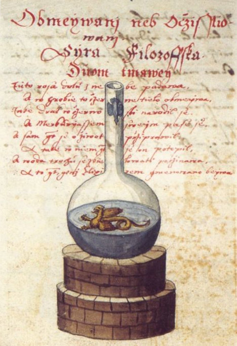

A Flask that could well be used for Magic, Medicine, Alchemy or Spagyric
Hermetic Magic, Medicine and Alchemy
Our story about Hermetic Magic begins at the end with the last person capable of learning everything available at the time.This person was:
- Robert Fludd, also known as Robertus de Fluctibus (bef. 17 January 1574 – 8 September 1637), was a prominent English Paracelsian physician with both scientific and occult interests. He is remembered as an astrologer, mathematician, cosmologist, Qabalist and Rosicrucian. He entered St John's College, Oxford as a commoner in 1591, graduating with a B.A. in 1597 and an M.A. in 1598. St John's College, Oxford was one of the few in England with any provision for Fellowship (medicine)
Between 1598 and 1604, Fludd studied medicine, chemistry and hermeticism on the European mainland following his graduation. On his own account he spent a winter in the Pyrenees studying theurgy (the practice of rituals) with the Jesuits. Furthermore, he indicated that he travelled throughout Spain, Italy and Germany following his time in France.
While he followed Paracelsus in his medical views rather than the ancient authorities, he was also a believer that real wisdom was to be found in the writings of natural magicians, who dealt with natural forces directly. Natural magic so defined included astrology, alchemy, and disciplines that we would today consider fields of natural science, such as astronomy and chemistry (which developed and diverged from astrology and alchemy, respectively, into the modern sciences they are today) or botany (from herbology). The Jesuit scholar Athanasius Kircher wrote that "there are as many types of natural magic as there are subjects of applied sciences".
- Paracelsus (c. 1493 – 24 September 1541), born in Switzerland as Theophrastus von Hohenheim (full name Philippus Aureolus Theophrastus Bombastus von Hohenheim), was a physician, alchemist, lay theologian, and philosopher of the German Renaissance.
About
Hi, my name is Rod Schneider and I have created this website to illustrate how, with the help of astrology, that negativity can be converted into something more positive. The astrology being shown here is rooted in the most ancient inceptions derived from Hermetism. It is technical but in the hands of a practitioner already familiar with astrology has great potential to be helpful. There is also much help for non-astrologers to use astrology in a different manner, namely with cycles and phases.Comments and contributions are always welcome.
Contact: rodschneider35@gmail.com